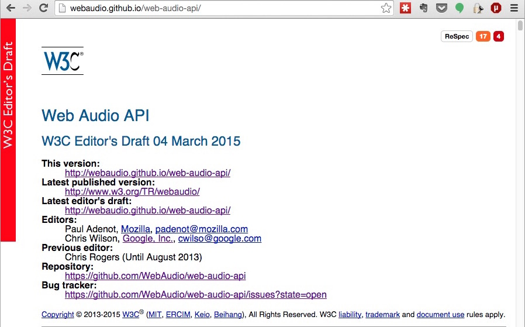

Web Audio

An emerging platform for Audio applications
FOSSASIA 2015
Agenda
- What is WebAudio??
- Why WebAudio matters??
- How to use WebAudio??
What?? - History
- bgsound
- object, embed
- < audio >
- Audio Data API
- Web Audio API

- ← Flash
- ← HTML5

What?? - Philisophy
include the capabilities found in modern game audio engines as well as some of the mixing, processing, and filtering tasks that are found in modern desktop audio production applications— W3C WebAudio Draft Spec
What?? - Status 
What?? - Status
| Specification | FPWD | LC | CR | PR | Rec |
|---|---|---|---|---|---|
| Web Audio API | Dec 2011 | Q1 2014 | Q3 2014 | Q1 2015 | Q1 2015 |
| Web MIDI API | Oct 2012 | Q1 2014 | Q2 2014 | Q3 2014 | Q3 2014 |
http://www.w3.org/2011/audio/wiki/W3C_Audio_Publications_and_Milestones#Latest_Estimates